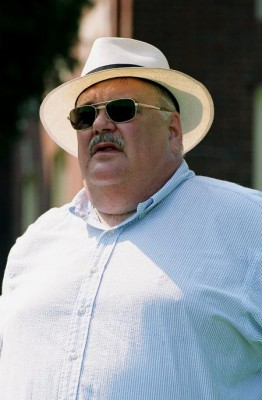
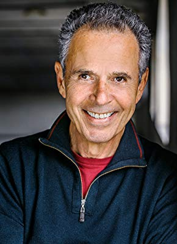

#2195 The Big Easy - Der große Leichtsinn
Alternativ: The Big Easy

 IMDB-Wertung: 6.6 / 10
IMDB-Wertung: 6.6 / 10  Metascore: 77
Metascore: 77 
In New Orleans, liebevoll The Big Easy (der große Leichtsinn) genannt, nimmt man das Leben leichter als im übrigen Amerika. Auch die Polizei drückt für manche Annehmlichkeit gern ein Auge zu. Eines Tages wird die Leiche des Drogenkuriers Angelo gefunden. Der Leiter der Mordkommission Remy McSwain, glaubt an eine Mafia-Fehde und würde den Fall am liebsten ungeklärt zu den Akten legen. Doch da taucht die stellvertretende Staatsanwältin Anne Osborne in seinem Büro auf. Sie hat den Auftrag, Polizeikorruption aufzudecken und McSwains Arbeit am Angelo-Fall zu beobachten.
Jahr: 1986
Dauer: 102 Minuten
FSK: 16
Land: USA Studio: Columbia PicturesTonspuren: DD5.1 - ,
Untertitel:
Auflösung: 1080p (1920x1080) Größe: 7833 MB
Genre: Thriller, Drama, Krimi, Liebe
Regisseur: Jim McBride
Drehbuch: Daniel Petrie Jr., Jack Baran, Jim McBride
Soundtrack: Brad Fiedel
Darsteller:
 Dennis Quaid als Remy McSwain
Dennis Quaid als Remy McSwain Ellen Barkin als Anne Osborne
Ellen Barkin als Anne Osborne Ned Beatty als Jack Kellom
Ned Beatty als Jack Kellom John Goodman als Det. Andre DeSoto
John Goodman als Det. Andre DeSoto Lisa Jane Persky als McCabe
Lisa Jane Persky als McCabe Ebbe Roe Smith als Ed Dodge
Ebbe Roe Smith als Ed Dodge- Tom O'Brien als Bobby McSwain
 Grace Zabriskie als Mama
Grace Zabriskie als Mama Marc Lawrence als Vinnie 'The Cannon' DiMotti
Marc Lawrence als Vinnie 'The Cannon' DiMotti- Solomon Burke als Daddy Mention
-  Gailard Sartain als Chef Paul
- Edward Saint Pe' als Patrolman
- Gary Anthony Sturgis als Car vandal #1
 Carol Sutton als Judge
Carol Sutton als Judge- Buddy Quaid als Justin
- Charles Ludlam als Lamar Parmentel
- Jim Chimento als Freddie Angelo
-  Robert Lesser als 'Silky' Foster
- Cheryl Starbuck als Hostess
- Margie O'Dair als Mugging victim
- Arden Lo als Mugger #1
- Rickey Pierre als Mugger #2
- Nick Krieger als Man in car
- Byron Nora als Car vandal #2
- Archie Sampier als Forensic #1
- Jeff Hollis als Sgt. Duvivier
- Joy N. Houck Jr. als Sgt. Guerra
- Steve Broussard als Dewey Piersall
- Eliott Keener als George Joel
- August Krinke als Internal Affairs Cop #1
- John Schluter als Internal Affairs Cop #2
- Zephirin Hymel IV als Internal Affairs Cop #3
- Jack Harris als Waiter
- George Dureau als Maitre d'
- Patrick Frederic als First Young Lawyer
- Lane Trippe als Second Young Lawyer
- Nik Hagler als Hugh Dowling
- Don Lutenbacher als Bailiff
- Peter Gabb als Magnet Salesman
- Jim Garrison als Judge
- Dave Petitjean als Uncle Sos
- Dennis Curren als Cousin Terry
- Rico Wheat als Rodney
- Robert Kearney als Desk Sergeant
- Joe Catalanotto als Garage Dispatcher
- Terrance Simien als Band Leader in Tipitina's Restaurant
- Gene Chambers als Guitarist in Tipitina's Restaurant
- Popp Esprite als Bassist in Tipitina's Restaurant
- Earl Sally als Scrubboardist in Tipitina's Restaurant
- Rudy Chambers als Drummer & Percussionist in Tipitina's Restaurant
Datei: X:\1986\Big Easy - Der große Leichtsinn, The (1986, FSK16, 1920x1080).mkv seit 19.10.2015
Festplatte: HD 1980-1986
 Es gibt insgesamt 50 Filme in der Gruppe '1986'
Es gibt insgesamt 50 Filme in der Gruppe '1986'